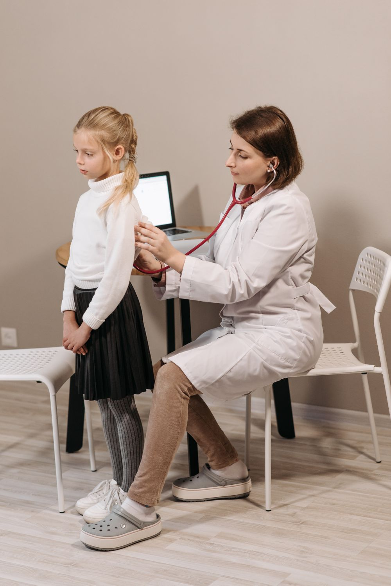
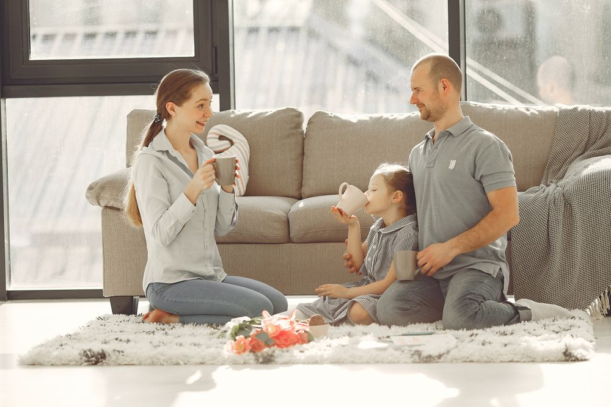

The psychiatric services iTrust Pediatrics provides for children and adolescents. Tap any one to see how we help.
Some kids have brilliant, busy minds that just work differently. We look past the "behavior problem" label to understand how your child focuses and learns, then build supports around their strengths.
Not sure it’s “enough” to reach out? Reach out anyway.
Schedule An Initial AppointmentIt's normal for kids to worry about a test or a thunderstorm. Anxiety is different, it's worry that gets so loud it crowds out school, sleep, friendships, and play. We take those worries seriously, with no judgment and no rush.
Not sure it’s “enough” to reach out? Reach out anyway.
Schedule An Initial AppointmentWhen sadness lingers for weeks and a child stops being themselves, it deserves real attention, not a "they'll grow out of it." We help families spot it early and build a path back to feeling like themselves again.
Not sure it’s “enough” to reach out? Reach out anyway.
Schedule An Initial AppointmentBig behaviors, meltdowns, defiance, anger that comes out of nowhere, are usually a child telling us something they can't yet put into words. We help families understand what's underneath and respond in a way that actually calms things down.
Not sure it’s “enough” to reach out? Reach out anyway.
Schedule An Initial AppointmentMood that swings, lingering irritability, or ups and downs beyond the usual can point to a mood disorder. We assess carefully, then help your child find steadier ground.
Not sure it’s “enough” to reach out? Reach out anyway.
Schedule An Initial AppointmentMedication management is a core part of what we do. When it's the right fit, our prescribers offer conservative medication support that's closely monitored over time.

Not sure it’s “enough” to reach out? Reach out anyway.
Schedule An Initial AppointmentCaring for a child means caring for the whole family. Through psychoeducation, care planning, and guidance from our practitioners, we help parents feel confident supporting their child at home.

Not sure it’s “enough” to reach out? Reach out anyway.
Schedule An Initial AppointmentStarting care shouldn't feel complicated, here's what to expect.
Book online or give us a call and tell us a little about your child. We'll match them with the right provider.
We send simple intake forms and parent paperwork to complete ahead of time, plus any consent or school-release forms, so the first visit is all about your child.
Meet your provider, share your story, and start building a plan together, at a pace that feels right.
Regular follow-up visits, check-ins, and steady support, with the whole family involved as your child grows.
One iTrust family
Emotional and cognitive well-being can affect individuals of all ages. iTrust Pediatrics is part of iTrust Wellness, trusted for more than 8 years, so families can find expert, connected care from childhood through older adulthood, and no one has to start over.